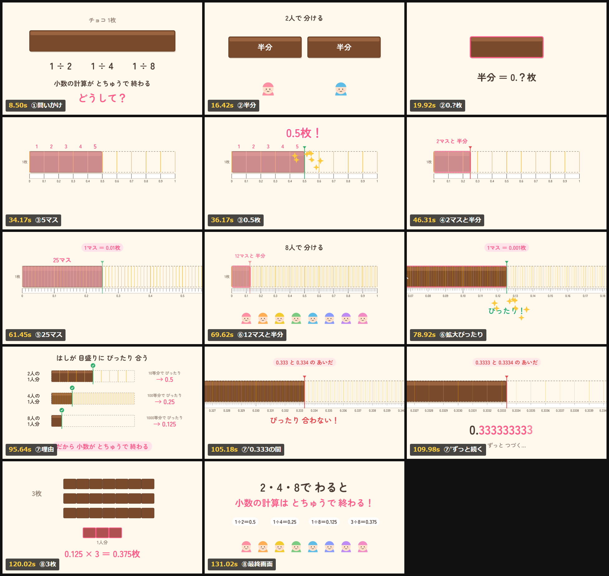

チョコを2人・4人・8人で分けて、小数のものさしを重ねる。1人分の端が目盛りにぴったり合うから、わり切れる。
「2、4、8で割ると、小数でかならずわり切れる。どうしてだろう？」から始まる。チョコ1枚を2人・4人・8人で分けると、1人分は半分、そのまた半分、そのまた半分。そこに10等分・100等分・1000等分の「小数のものさし」を重ねると、1人分の端が目盛りにぴったり合う。3人で分けたときだけは、どんなに目盛りを細かくしても端が目盛りの間に落ちて、0.333…とずっと続く。
| 場面 | 見せるもの | ナレーション（要約） |
|---|---|---|
| 1 問いかけ0:00 | チョコ1枚と「1÷2、1÷4、1÷8」 | 2、4、8で割ると、小数でかならずわり切れる。どうしてだろう？ |
| 2 2人で分ける0:09 | チョコを半分に切って2人に配る | 1人分は半分。この半分、小数ではどう書く？ |
| 3 小数の目盛り0:22 | 元の1枚の輪郭に10等分の目盛りを重ねる。半分は5マス | 1マスが0.1枚。半分は5マス分だから、0.5枚 |
| 4 4人で分ける0:37 | 4等分の1人分は、10等分の目盛りだと2マスと半分 | もっと細かい目盛りで見てみよう |
| 5 100等分0:51 | 各マスをさらに10等分。1人分はちょうど25マス | 1マスは0.01枚。25マスだから、0.25枚 |
| 6 8人で分ける1:05 | 1000等分の目盛り。端を拡大して、ちょうど125マス | 1マスが0.001枚で、125マス。だから0.125枚 |
| 7 理由1:24 | 2人・4人・8人の1人分を並べ、端に緑の印 | 目盛りを細かくしていくと、端がぴったり合う。だから小数でわり切れる |
| 7' 5人でも1:37 | 5等分の1人分は、0.1の目盛りでちょうど2マス。「10 ＝ 2 × 5」 | 10は、2でも5でも、ぴったり分けられる数 |
| 7'' 3人だと1:56 | 端を10倍・100倍・1000倍と拡大しても、目盛りの間に落ちる。「0.333…」が伸びる | どんなに細かい目盛りにしても、端がぴったり合わない |
| 8 どんな整数でも2:09 | 3枚を8人で。8分の1を3つ集めて「0.125 × 3 ＝ 0.375」。まとめの式 | 1枚のときの1人分を枚数だけ足せばいい。だから何枚でも、かならずわり切れる |

書き出し前に確認した14コマ。初版は「ケーキを10・100・1000きれに切る」案だったが、「なんで8人分じゃなくて10に切るの？」と聞かれそうだったので、目盛りを重ねる案に差し替えた。
制作はすべてClaude Code上で行った。シリーズ第1作。第2作の「同じ量、いろいろな表し方」は、この回で使ったチョコと目盛りの約束ごとをそのまま引き継いでいる。